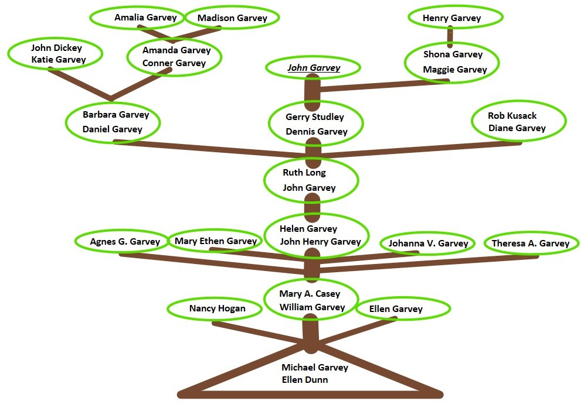

- Family Tree -
The following section illustrates the Garvey lineage in a family tree. The following tree follows only the male lines that carried on the Garvey surname. The bottom of the tree begins with Michael the oldest generation and then follows the straight path of lineage leading up to me but it also branches for the older generation of siblings. Then at the top the tree branches out to the newest Garvey generations. The newest Garvey on the tree is Henry Garvey, born to Maggie and Shona in New Hampshire, who is only three months old.
